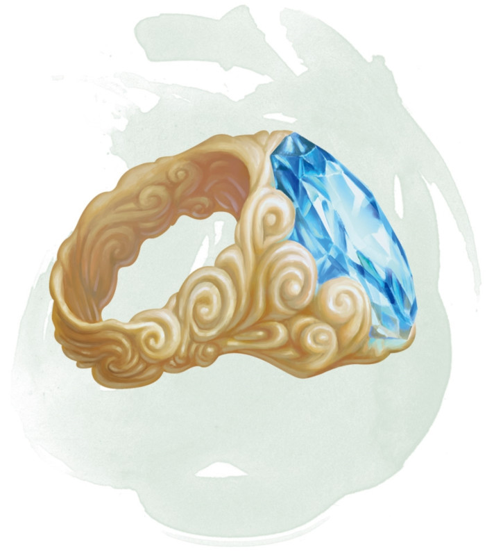

Anneau de convocation de djinn
Anneau, légendaire (nécessite un lien)
Tant que vous êtes équipé de cet anneau, vous pouvez prononcer son mot de commande en utilisant une action pour invoquer un djinn particulier depuis le plan élémentaire de l'Air. Le djinn apparaît dans un espace inoccupé de votre choix dans un rayon de 36 mètres autour de vous. Il reste aussi longtemps que vous vous concentrez (comme lorsque vous vous concentrez sur un sort), pour une durée maximale de 1 heure, ou jusqu'à ce que ses points de vie tombent à 0. Puis il retourne dans son plan natif.
Tant qu'il est invoqué, le djinn a une attitude amicale envers vous et vos compagnons. Il obéit aux ordres que vous lui donnez, quelle que soit la langue utilisée. Si vous ne lui donnez aucun ordre, le djinn se défend lui-même contre les attaquants mais n'entreprend aucune autre action.
Après son départ, le djinn ne peut être réinvoqué pendant 24 heures, et l'anneau devient un simple anneau non magique si le djinn meurt.
Tant qu'il est invoqué, le djinn a une attitude amicale envers vous et vos compagnons. Il obéit aux ordres que vous lui donnez, quelle que soit la langue utilisée. Si vous ne lui donnez aucun ordre, le djinn se défend lui-même contre les attaquants mais n'entreprend aucune autre action.
Après son départ, le djinn ne peut être réinvoqué pendant 24 heures, et l'anneau devient un simple anneau non magique si le djinn meurt.
Dungeon Master´s Guide (SRD)
